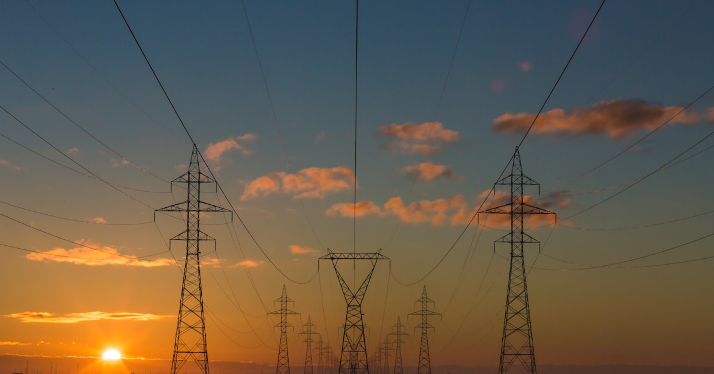

Indonesia 2045: 3 Skenario Ekonomi yang Jarang Dibahas Media
Narasi Indonesia Emas 2045 populer, tapi ada tiga skenario lain yang jarang dibahas. Simak analisis realistis tentang jalur ekonomi yang mungkin.

Ekonomi Indonesia 2026: 8 Sektor yang Tumbuh Pesat & 3 yang Runtuh
Analisis mendalam ekonomi Indonesia 2026: sektor mana yang menunjukkan pertumbuhan eksplosif dan mana yang menghadapi krisis. Data terkini BPS, BI, dan Kementerian Keuangan.

Krisis Iklim Indonesia 2026: 6 Provinsi Paling Terancam dan Apa yang Bisa Dilakukan
Perubahan iklim mengancam Indonesia secara nyata di 2026. Inilah 6 provinsi paling terdampak menurut BMKG dan langkah konkret menghadapinya.

Dampak Perang Iran-AS terhadap Ekonomi Indonesia: Avtur Naik 72%, Rupiah Melemah
Perang Iran-AS mengguncang ekonomi Indonesia: harga avtur melonjak 72%, rupiah sentuh Rp17.000/USD, dan arus modal keluar $0,41 miliar. Analisis dampak lengkap.

Tarif Trump 32% ke Indonesia: Ancaman Nyata Perang Dagang 2026
Trump kenakan tarif 32% ke Indonesia dalam perang dagang global. IMF turunkan proyeksi pertumbuhan dunia. Bagaimana dampaknya ke ekspor dan ekonomi RI?

Selat Hormuz 2026: 5 Fakta Mengejutkan Jalur Minyak Penentu Ekonomi Dunia
25% perdagangan minyak dunia lewat Selat Hormuz yang hanya selebar 33 km. Penutupan oleh Iran saat perang 2026 membuat harga minyak melonjak 27%.

Demo Besar 107 Kota di Indonesia 2026: Tuntutan Reformasi Upah dan Lapangan Kerja
Ratusan ribu rakyat turun ke jalan di 107 kota. Protes upah rendah, pengangguran, dan tunjangan kontroversial DPR/militer mengguncang Indonesia.

Indonesia Kirim Pasukan ke Gaza 2026: Ujian Besar Politik Luar Negeri Bebas Aktif
Rencana Indonesia kirim pasukan perdamaian ke Gaza jadi ujian doktrin bebas aktif. Sejarah TNI di misi PBB dan implikasi diplomatik dengan AS-Israel.

Gencatan Senjata Iran-Amerika 2026: Trump Beri Waktu 2 Minggu, Iran Ajukan 10 Syarat
Gencatan senjata 14 hari disepakati 8 April 2026 setelah ultimatum Trump. Dimediasi Pakistan, Iran ajukan 10 syarat termasuk buka Selat Hormuz dan pencabutan sanksi. Negosiasi lanjutan di Islamabad.

Deepfake 2026: 5 Bahaya Nyata bagi Demokrasi Indonesia
Teknologi deepfake semakin canggih dan murah. Bagaimana AI-generated content mengancam integritas pemilu dan demokrasi Indonesia?

Konflik Palestina 2026: Kronologi, Dampak Global, dan Posisi Indonesia
Krisis kemanusiaan berlanjut. Analisis lengkap kronologi konflik, dampak geopolitik global, dan peran Indonesia di panggung internasional.

Shrinkflation: Inflasi Tersembunyi yang Diam-diam Menggerus Dompetmu
Harga tetap tapi isi berkurang. 73% produk FMCG Indonesia mengalami shrinkflation. Cara mendeteksi dan melindungi dompetmu.

Mengapa Indonesia Masih Miskin Padahal Kaya Sumber Daya Alam?
Indonesia punya emas, nikel, kelapa sawit, tapi GDP per kapita masih kalah dari Malaysia dan Thailand. Analisis paradoks kutukan sumber daya alam.

Skandal Judi Online Indonesia 2026: Triliunan Rupiah yang Hilang
Rp 600 triliun hilang ke judi online setiap tahun. Data mengejutkan tentang korban, modus operandi, dan mengapa pemerintah kewalahan memberantas.

China vs Amerika: Siapa Menang Perang Teknologi 2026?
Chip wars, AI race, dominasi 5G. Analisis data lengkap persaingan teknologi dua superpower dan dampaknya bagi Indonesia.

Krisis Air Bersih Global 2026: Ketika Emas Biru Menjadi Sumber Konflik Baru
2,3 miliar orang kekurangan air bersih. Analisis data krisis air global, wilayah terdampak, dan potensi konflik geopolitik akibat kelangkaan sumber daya air.

Krisis Perumahan Gen Z 2026: Mengapa Generasi Ini Mungkin Tidak Akan Pernah Punya Rumah
Rasio harga rumah vs pendapatan di Jakarta mencapai 18x. 72% Gen Z belum mampu beli rumah. Analisis data dan solusi krisis perumahan Indonesia.

Perang Dagang AS-China 2026: Tarif 145% dan Dampaknya bagi Ekonomi Indonesia
Tarif 145% Trump terhadap China memicu perang dagang baru. Analisis dampaknya terhadap ekspor Indonesia, tekanan rupiah, dan peluang sebagai alternatif manufaktur.

Krisis Taiwan: Skenario yang Bisa Mengubah Tatanan Dunia
Analisis mendalam tentang krisis Selat Taiwan, ketegangan AS-China, ketergantungan semikonduktor TSMC, dan dampaknya terhadap ASEAN serta ekonomi global.

Indonesia Resmi Bergabung BRICS 2026: Apa Dampaknya bagi Rakyat dan Ekonomi?
Indonesia resmi jadi anggota BRICS. Apa manfaat nyatanya bagi rakyat — dari harga barang, lapangan kerja, hingga beasiswa?

ASEAN 2026: 7 Strategi Bertahan di Tengah Rivalitas Global
Bagaimana ASEAN mempertahankan netralitas dan relevansinya di tengah persaingan kekuatan besar AS-China di kawasan Indo-Pasifik.

Geopolitik Energi 2026: 6 Negara Penguasa yang Bikin Dunia Bertekuk Lutut
Persaingan global untuk menguasai sumber daya energi dari minyak hingga litium membentuk ulang peta kekuatan dunia.

BRICS 2026: 5 Bukti Tatanan Ekonomi Baru Mengejutkan Dominasi Barat
Aliansi BRICS semakin menguat dengan ekspansi anggota baru. Apakah ini awal dari pergeseran kekuatan ekonomi global?
Konflik Laut China Selatan 2026: 7 Dampak Krusial bagi Indonesia
Sengketa teritorial di Laut China Selatan bukan hanya masalah negara klaim, tetapi juga mengancam kedaulatan dan ekonomi Indonesia.
Proliferasi Nuklir di Abad 21: Ancaman yang Tak Pernah Padam
Perlombaan senjata nuklir kembali memanas. Dari Korea Utara hingga Iran, ancaman proliferasi nuklir terus membayangi dunia.